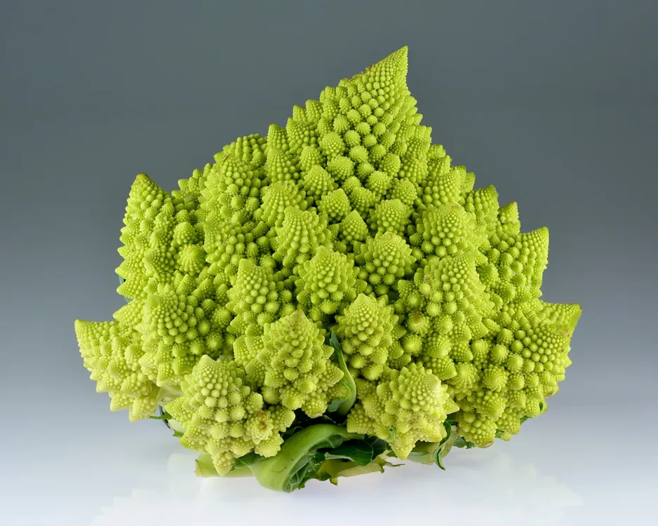
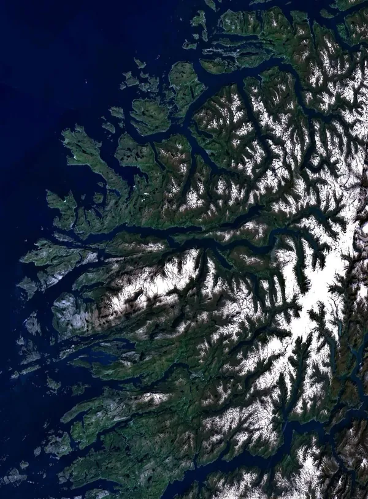
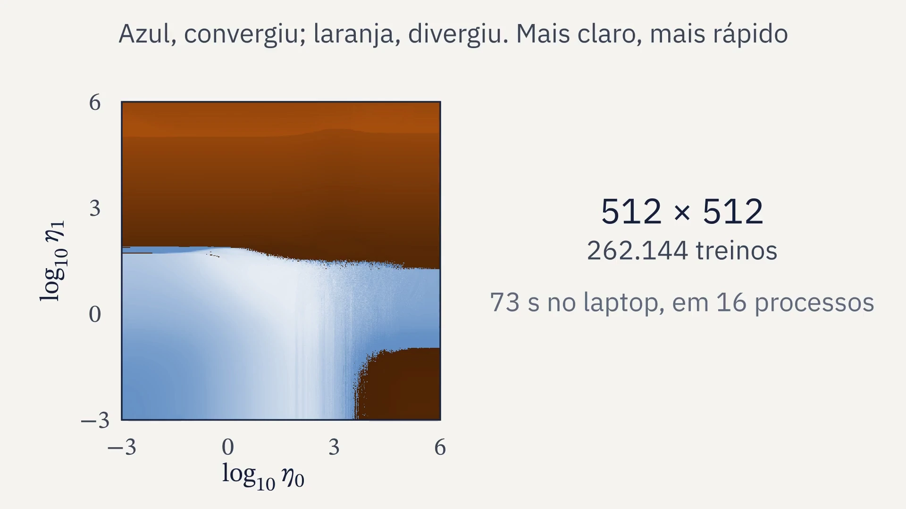
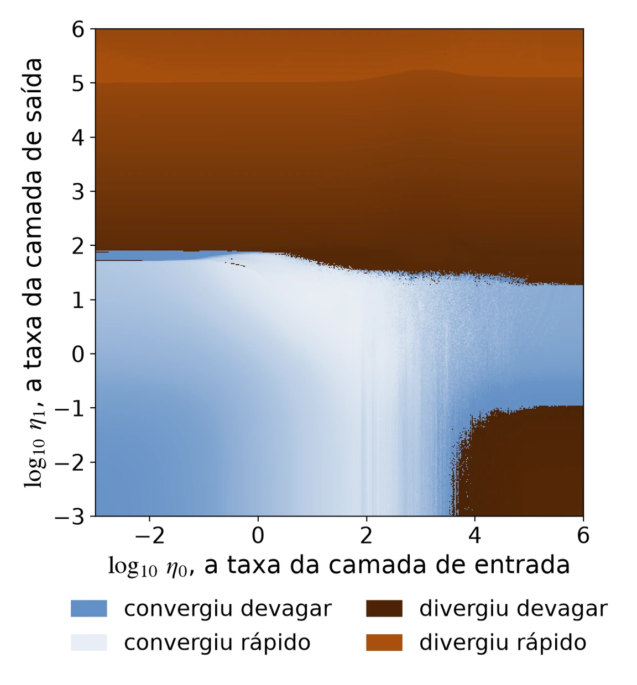
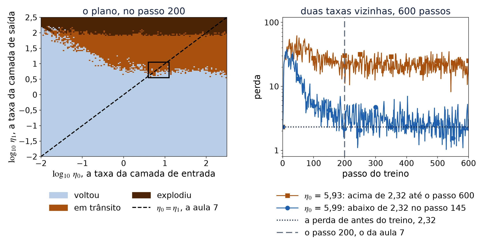
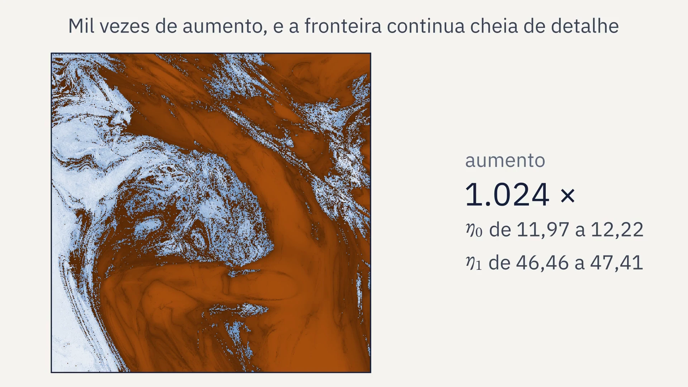
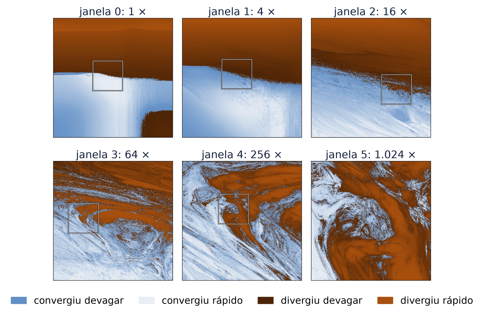
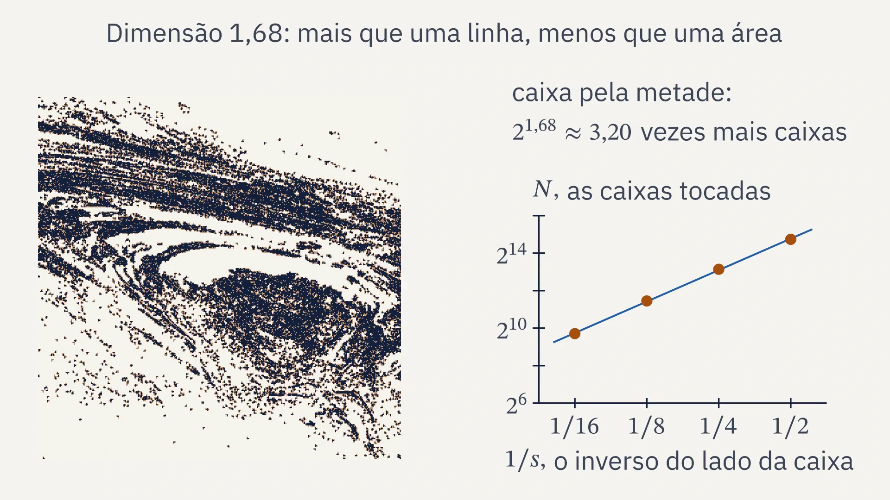
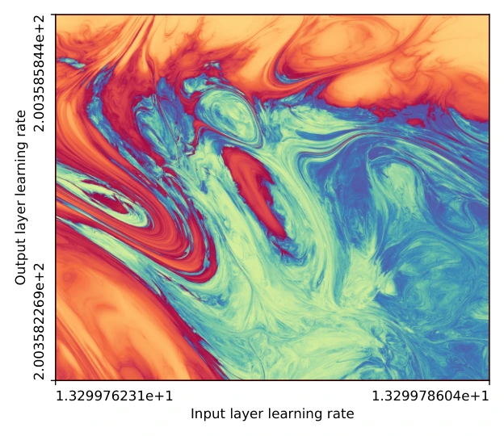
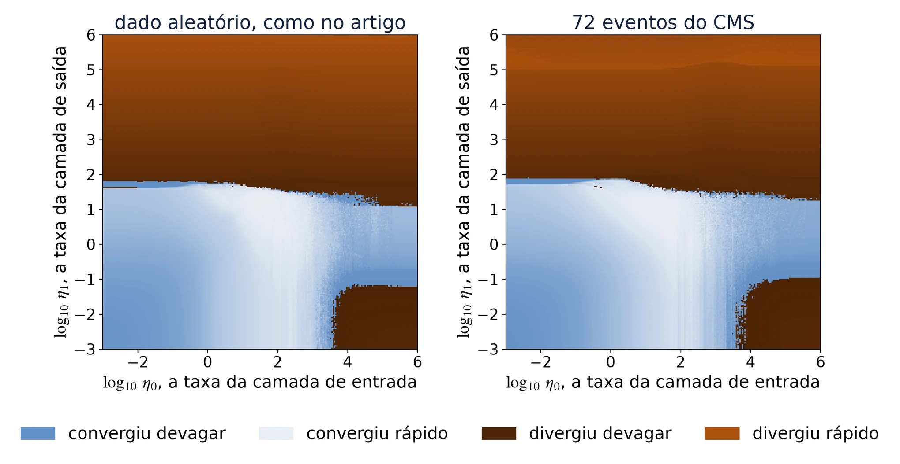

SIENA, NIPS-CERN, UFJF
Limiar
Redes neurais, do neurônio ao fractal
Aula 9: o fractal, pincelado, e o projeto
04/12/2026. C∴ Chrysthofer A. A. Afonso

Couve romanesca, um fractal da natureza. Foto de Ivar Leidus, 03/01/2021, Wikimedia Commons, CC BY-SA 4.0.
Limiar, aula 9: o fractal e o projeto


1 · Revisão
O que ficou da aula 8, de memória
1
O que é a massa invariante, e por que não depende de quem mede?
2
Por que o histograma tem picos?
3
Por que as entradas passam pelo asinh antes da rede?
4
Onde a rede erra mais, e por quê?
Limiar, aula 9: o fractal e o projeto
1 · Revisão
O fio do curso, da aula 1 à 10
1
O neurônio e o perceptron
um neurônio desenha uma reta, e nenhuma reta separa o XOR
25/09, presencial
2
Derivada e gradiente
o passo contra a derivada; a taxa grande demais faz o treino divergir
02/10, presencial
3
Matrizes e camadas
duas camadas separam o XOR, com pesos escolhidos à mão
13/11, on-line
4
O Jacobiano
a regra da cadeia com vetores, uma camada de cada vez
13/11, on-line
5
Retropropagação
a regra da cadeia, de trás para a frente, acha os pesos do XOR
13/11, on-line
6
O MNIST em NumPy
um MLP em 70 mil dígitos escritos à mão, com treino, validação e teste
27/11, on-line
7
PyTorch
a biblioteca faz a retropropagação; o erro final contra a taxa
27/11, on-line
8
Os dados do CERN
um MLP estima a massa dos dois múons, conferida pela fórmula
04/12, on-line
9
O fractal e o projeto
a fronteira entre a taxa que converge e a que diverge
04/12, on-line
10
A apresentação
a apresentação do projeto e a revisão do curso inteiro
11/12, on-line
Limiar, aula 9: o fractal e o projeto
2 · Repetir uma conta
Uma taxa para cada camada: que figura faz a fronteira?
Na aula 7, com uma taxa só, a fronteira entre melhorar e piorar a rede ficou quebrada entre 3,86 e 7,55.
Limiar, aula 9: o fractal e o projeto
2 · Repetir uma conta
Repetir uma conta: fica perto ou foge
←, recebe: o valor da direita passa a ser o x
∇L, nabla L: o gradiente da perda, o passo da aula 2
c
x₁
x₂
x₃
x₄
x₅
−1
−1
0
−1
0
−1
fica entre −1 e 0
0,25
0,2500
0,3125
0,3477
0,3709
0,3875
chega perto de 0,5
1
1
2
5
26
677
foge
Começando em x = 0. O c da conta faz o papel da taxa η: escolhido antes, decide se a conta repetida fica perto ou foge.
Limiar, aula 9: o fractal e o projeto
2 · Repetir uma conta
Fica perto ou foge

Limiar, aula 9: o fractal e o projeto
2 · Repetir uma conta
Fractal, de novo
Fractal: uma figura com detalhe em qualquer escala. Ampliada, continua cheia de detalhe, em vez de virar uma linha lisa.
De onde vem o nome: fractal
Do latim fractus, quebrado. A palavra foi criada por Benoit Mandelbrot em 1975.
Quase nunca igual a si mesmo: a fronteira do treino não repete a figura inteira, e mesmo assim continua quebrada em qualquer escala.

Fiordes da Noruega. Landsat, NASA, Wikimedia Commons, domínio público.
Limiar, aula 9: o fractal e o projeto
3 · O mapa das duas taxas
A rede do projeto
ŷ, y chapéu: a saída da rede, a estimativa do alvo y
A rede e os dados
- 8 entradas: E, px, py e pz dos dois múons
- 8 neurônios com a tanh, sem viés
- 72 pesos e 72 eventos do CMS
- 100 passos com todos os exemplos, em float64
No artigo
- 16 neurônios, 272 exemplos aleatórios
- 500 passos
Limiar, aula 9: o fractal e o projeto
3 · O mapa das duas taxas
Convergiu ou divergiu
v t: a perda no passo t sobre a do começo
⇔, se e só se
A cor diz a rapidez: mais claro, mais depressa a perda caiu ou explodiu.
1
1
0,74
convergiu devagar
10
31,6
0,30
convergiu rápido
10
158
divergiu
10
31.623
estoura no passo 42
divergiu
Os quatro treinos do vídeo seguinte; v₉₉ é a perda do último passo sobre a do começo.
Limiar, aula 9: o fractal e o projeto
3 · O mapa das duas taxas
Cada pixel é um treino

Limiar, aula 9: o fractal e o projeto
3 · O mapa das duas taxas
O mapa inteiro: 262.144 treinos

Converge
as duas taxas pequenas: azul, embaixo e à esquerda
Diverge
η₁ acima de uns 20 a 80, em cima; η₀ acima de uns 4.000 com η₁ pequena, embaixo à direita
A fronteira de cima
de longe, quase reta; de perto, recortada
Limiar, aula 9: o fractal e o projeto
3 · O mapa das duas taxas
A rede da aula 7 no plano

Na faixa, a perda oscila sem se assentar: no passo 200, taxas vizinhas caem em classes diferentes.
Limiar, aula 9: o fractal e o projeto
4 · O zoom e a dimensão
O zoom na fronteira

Limiar, aula 9: o fractal e o projeto
4 · O zoom e a dimensão
Seis janelas, uma dentro da outra

Limiar, aula 9: o fractal e o projeto
4 · O zoom e a dimensão
A dimensão pela contagem de caixas
N(s): as caixas de lado s que a figura toca; ∝, proporcional a
A dimensão d é a inclinação da reta.
1
a linha
caixa pela metade, 2 vezes mais caixas
2
a área
caixa pela metade, 4 vezes mais caixas
1 a 2
a fronteira fractal
entre uma e outra
Limiar, aula 9: o fractal e o projeto
4 · O zoom e a dimensão
Contar caixas

Limiar, aula 9: o fractal e o projeto
4 · O zoom e a dimensão
A dimensão da fronteira
janela
aumento
dimensão
0
1 ×
1,39
1
4 ×
1,51
2
16 ×
1,57
3
64 ×
1,68
4
256 ×
1,66
5
1.024 ×
1,72
Caixas de 2, 4, 8 e 16 pixels, em mapas de 512 por 512.
1,62
a mediana das seis janelas, com os múons do CMS
1,66
no artigo: tanh, lote completo, dado aleatório
Perto de 1,6, entre a linha e a área. A diferença para o artigo, 0,04, é menor que a variação entre as janelas.
Limiar, aula 9: o fractal e o projeto
5 · De onde vem
Da conta repetida ao treino
1918
Gaston Julia publica o estudo do que acontece quando se repete uma conta como z² + c.
1978
Robert Brooks e Peter Matelski desenham pela primeira vez o conjunto de Mandelbrot.
1980
Benoit Mandelbrot obtém imagens de alta qualidade do conjunto, na IBM.
2024
Jascha Sohl-Dickstein mostra que a fronteira das taxas que treinam é fractal.

Figura 1 do artigo: a rede com a tanh e o lote completo, dimensão 1,66. Jascha Sohl-Dickstein, 2024, arXiv:2402.06184, CC BY 4.0.
Limiar, aula 9: o fractal e o projeto
6 · O projeto
Com os dados do CMS, quase a mesma paisagem

A pergunta do projeto: a fronteira com dados reais continua fractal, e qual é a dimensão dela?
Limiar, aula 9: o fractal e o projeto
6 · O projeto
O custo: cada pixel é um treino
mapa
treinos
tempo
128 × 128
16.384
3,6 s
16 processos
256 × 256
65.536
85 s
1 processo, como no varredura.py
512 × 512
262.144
73 s
16 processos
4.096 × 4.096
16.777.216
≈ 78 min
estimativa: 64 vezes a de 512
No laptop de cada um
a janela inteira em 128 por 128
No PC do laboratório
as janelas grandes e o zoom fundo
Tempos no laptop do professor, bem mais forte que o dos alunos.
Limiar, aula 9: o fractal e o projeto
6 · O projeto
O código
1
perda_e_gradientes: a rede escrita para ler, uma de cada vez
2
treinar: a mesma conta para milhares de redes, uma por par de taxas
3
medida: cada treino vira um número, convergiu ou divergiu, e a rapidez
4
--conferir: o gradiente contra a derivada numérica, antes de qualquer imagem
5
fractal.py: os pixels repartidos entre os núcleos do processador
projeto/varredura.py
X, y = carregar_muons(72, 0)
perdas = treinar(X, y, W0, W1,
taxa0, taxa1, 100)
V = medida(perdas)
Antes de qualquer imagem
python projeto/varredura.py --conferir
Limiar, aula 9: o fractal e o projeto
6 · O projeto
Cinco etapas, feitas pela turma inteira
1
A rede e a conferência
o --conferir explicado
2
A varredura
a janela inteira e as grandes, com o .json
3
As imagens
as figuras finais, legíveis em cinza
4
O zoom e a dimensão
a sequência de janelas e a contagem de caixas
5
Os dados e a história
o CMS, o artigo e o fio da apresentação
Limiar, aula 9: o fractal e o projeto
6 · O projeto
A apresentação da aula 10, como um artigo curto
1
A pergunta: com dados do CMS, a fronteira é fractal? Qual a dimensão?
2
O método: a rede, os dados, o treino, a regra e as cores
3
Os resultados: a janela, o zoom e a dimensão, com a incerteza
4
A comparação com o artigo: o que bate e o que não bate
5
Os limites, ditos como tal: as janelas e as caixas
6
Como refazer: a semente, os dados e o comando de cada figura
Limiar, aula 9: o fractal e o projeto
7 · Fechamento
Para estudar e entregar
Estudo
- a apresentação da aula 10
- Sohl-Dickstein, 2024, “The boundary of neural network trainability is fractal”, três páginas
Entrega, até 11/12
- as imagens finais do projeto
- a apresentação pronta, no repositório
A seguir
- aula 10: a apresentação do projeto
- e a revisão do curso inteiro
Limiar, aula 9: o fractal e o projeto